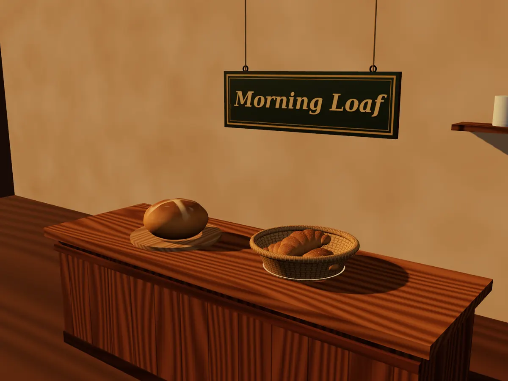

← Blender, Unity & Godot MCP: the test
dgreenheck/webgpu-claude-skill: test run, 2026-11-08
Claude Code (Claude Opus 5.5) used this tool on the same brief as every other run: a small bakery counter scene, rendered at 1600 x 1200, in a throwaway Linux sandbox with Blender 3.4, OpenSCAD and a headless Chromium. Repo commit af2319bd01bb. Brief · All results

Checked
| Item of the brief | In the render |
|---|---|
| a wooden counter | yes |
| the round loaf | yes |
| the wicker basket | yes |
| three croissants | yes |
| the hanging sign reading Morning Loaf | yes |
| light from the left | yes |
| the view from slightly above | yes |
| 1600 x 1200 | yes |
| a scene file | yes |
Sign read by OCR; croissants counted in the scene file (3); size from the file ([1600, 1200]); the rest by gpt-6-astra. Judge: looks 5/5, follows the brief 5/5. Glitches it saw: none. Warm, polished bakery scene with all requested elements clearly visible.
4.0 minutes (installing the tool included), 23 agent turns, $0.88 at API prices. Files: index.html.
The agent's last words
To view it again, serve `~/work/output` over HTTP (for example `python3 -m http.server -d ~/work/output`) and open `index.html`. It won't load straight from the file because the browser blocks its scripts that way. The Three.js library files are copied into `lib/`, so it runs offline. The render script is `~/work/build/render.py`. DELIVERABLE: /home/runner/work/output/render.png, /home/runner/work/output/index.html, /home/runner/work/output/lib/three.webgpu.js, /home/runner/work/output/lib/three.tsl.js, /home/runner/work/output/lib/three.core.js, /home/runner/work/output/lib/OrbitControls.js